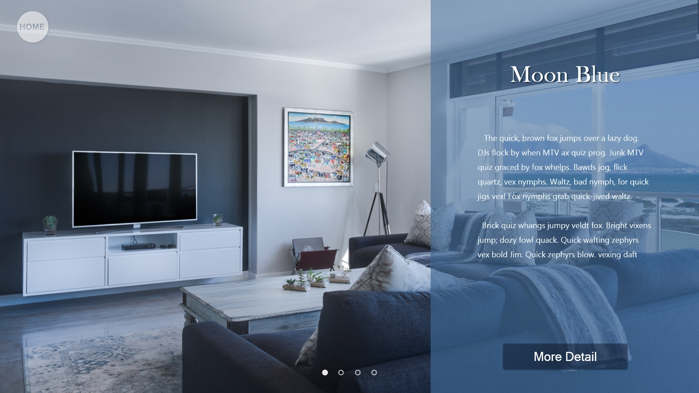

製作一飯店網頁，用於展示整頁的房間圖片，可換頁展示其它不同房型。
需求為附加房型名稱及介紹標語，下方按鈕可進入詳細介紹。
製作wireframe，全屏展示各式房型圖片，側邊區塊為標題及介紹，下方按鈕可進入詳細介紹。
從免費圖庫網站Pexels選取4張像素夠高且氛圍適合的房間圖片，作為提供圖片。以選色工具取得4張房間圖片各自的主色，降低主色的透明度、明度、彩度，作為符合側邊區塊的背景色，製作剩餘部分。
編輯程式碼，jQuery控制頁面的轉換。製作成RWD式網頁，裝置寬度較小時會呈現一頁式網頁，於同一頁面展示內容較適合尺寸小的裝置。

反思：
- 製作時尚未學習使用CSS的grid功能，因此在排版製作過程中十分不順，也會產生不同尺寸視窗跑版的問題，學習grid後使用可以改善問題。